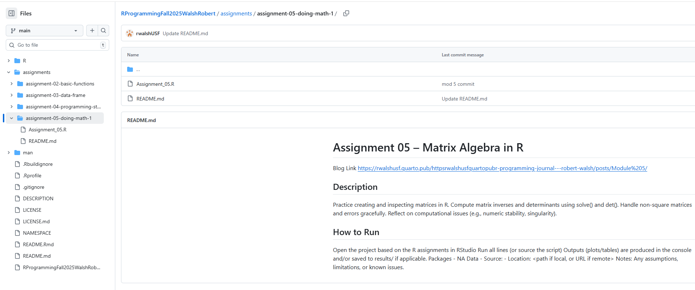

#In R, define
A <- matrix(1:100, nrow = 10)
B <- matrix(1:1000, nrow = 10)This is my Module #5 post for my LIS4370 blog. Welcome!
Code repository:

Task # 1 - Create matrices
Task # 2 - Inspect dimensions
#Verify whether each matrix is square
dim(A) # should be 10 x 10[1] 10 10dim(B) # 10 x 100 - not square[1] 10 100Task # 3 - Compute inverse and determinant
#Use solve() and det(); handle errors for non-square or singular matrices:
#For A
invA <- tryCatch(solve(A), error = function(e) print(e))<simpleError in solve.default(A): Lapack routine dgesv: system is exactly singular: U[6,6] = 0># solve(A) does not work for my test! It produces an error!
# Yes, the matrix is square, 10x10, however;
# When I create matrix A, and use the solve() function the results produce
# a calculation that states that Matrix A is exactly singular: U[6,6] = 0
# This is perhaps due to strong correlations between the predictor variables:
cor(A) [,1] [,2] [,3] [,4] [,5] [,6] [,7] [,8] [,9] [,10]
[1,] 1 1 1 1 1 1 1 1 1 1
[2,] 1 1 1 1 1 1 1 1 1 1
[3,] 1 1 1 1 1 1 1 1 1 1
[4,] 1 1 1 1 1 1 1 1 1 1
[5,] 1 1 1 1 1 1 1 1 1 1
[6,] 1 1 1 1 1 1 1 1 1 1
[7,] 1 1 1 1 1 1 1 1 1 1
[8,] 1 1 1 1 1 1 1 1 1 1
[9,] 1 1 1 1 1 1 1 1 1 1
[10,] 1 1 1 1 1 1 1 1 1 1# I wrapped solve(A) in a try-catch function to get the program to run.
detA <- det(A)
detA[1] 0# det(A) works, however, the output simply provides the 0 which indicates that
# there is no inverse solution to this matrix, it is singular.
#For B, use tryCatch to capture errors
invB <- tryCatch(solve(B), error = function(e) print(e))<simpleError in solve.default(B): 'a' (10 x 100) must be square># The operations on B fail because the dimensions of matrix B are 10x100
# resulting in a non-square matrix that does not have an inverse solution.
detB <- tryCatch(det(B), error = function(e) print(e))<simpleError in determinant.matrix(x, logarithm = TRUE, ...): 'x' must be a square matrix># Therefore solve(B) will not produce a solution and det(B) will not as well.Task # 4 - Document your results
# On your blog, include:
# R code for creating A and B, and for computing invA, detA, invB, and detB
# Shown Above.
# Output or error messages for each operation.
# Displayed after the erroneous function calls.
# A brief explanation:
# Why solve(A) and det(A) work.
# Shown/explained above.
# Any notes on numeric stability or performance.
# Some notes on numeric stability include using randomized numbers that do
# not match or correlate as closely. This will improve the performance of the
# matrix linear algebra, and allow the functions/operations to compute
# the correct results according to the proper matrix math, given that the
# correct synax is provided in the code to perform the desired operations.
# This can be considered when creating a linear model for bivariate and
# multivariate linear regression and matrix math.